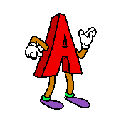
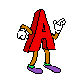
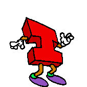
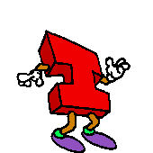
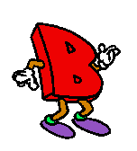
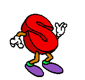
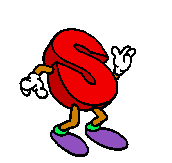
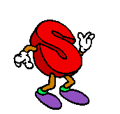

 




 




Clasificación de la Basura
La clasificación de la basura consiste en separar los residuos según su tipo. Esta práctica sencilla ayuda a reciclar, reducir la contaminación y cuidar nuestro planeta. ¡Todo empieza desde casa!
Información Básica
¿Qué es clasificar?
Separar la basura según su tipo: orgánica, reciclable o no reciclable.
Tipos de basura:
Orgánica, reciclable, no reciclable y peligrosa.

¿Por qué es importante?
Facilita el reciclaje, reduce la basura y protege el medio ambiente.
Videos hechos en el plantel
¡Hagamos un cambio!

Tu granito de arena es importante
¡Cuida el planeta, no lo contamines!

Haz uso de las 3R

No tires basura, reutiliza
Recicla hoy, para un mejor mañana

Reciclar es tarea de todos
Videos sobre Reciclaje
Cómo se clasifica la basura
Consecuencias de no reciclar y tirar basura